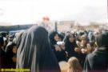

تغییر برای برابری
تغییر برای برابریکاروان ناوگان آزادی برای شکستن محاصره غزه برای دومین سال متوالی در پایان ماه جون جاری به حرکت در خواهد آمد. سال گذشته از کشور سوئد نویسندگان مشهور ، پزشکان، پژوهشگران و نمایندگان احزاب سیاسی در مجلس در یکی از این کشتیها حضور داشتند. آنان توسط ارتش اسرائیل مورد ضرب و شتم قرار گرفته ودستگیر و زندانی شدند. این خبر انعکاس وسیعی در مطبوعات سوئد یافت. امسال نیز در آستانه حرکت ناوگان جدید، مطبوعات و رادیو وتلویزیون گزارشات متعددی را از کاروان ناوگان منتشر کرده اند...
پذيرش > واژه كليدها > صفحه بندی > ستون وسط
ستون وسط
مقالهها
-
 زنان در ناوگان آزادی به سوی شکستن محاصره غزه
زنان در ناوگان آزادی به سوی شکستن محاصره غزه
2 ژوئيه 2011 -
با زنان در خبر: زنان در صدر اخبار آسیب های اجتماعی در ایران
11 نوامبر 2011, بوسيلهى pariزنان در این هفته نیز در صدر اخبار مربوط به آسیب های اجتماعی، اعتیاد، ایدز، اسید پاشی ...قرار داشتند و پربیراه نیست که در فاصله جنسیتی 125 در جهان قرار داشته باشد. از اخبار متعجب کننده این هفته الزامی شدن ورود زنان اسکی باز با سرپرست قانونی شان به پیست اسکی بود! احتمالا تقسیم کردن فضای مردانه و زنانه در پیست اسکی کمی با دشواری مواجه بوده است...
-
سن مسئولیت کیفری / قسمت دوم: بررسی سن مسئولیت کیفری در اسناد بین المللی
6 نوامبر 2010مقررات بین المللی نشان می دهد که هنوز استاندارد بین المللی مشخص و یکسانی برای «حداقل سن مسئولیت کیفری» وجود ندارد. فقدان یک استاندارد بین المللی در این زمینه، شاید از این واقعیت نشأت می گیرد که درک و فهم جوامع مختلف و حتا یک جامعه با دیدگاه های مختلف و فرهنگ های متعدد درباره سنی که طی آن کودکان می توانند نتایج اعمال خودشان را درک بکنند، متفاوت است...
-
برای اولین بار حس می کنم که فهمیده می شوم/گفتگوی نشریه ی «اما» با دو زن تن فروش
27 فوريه 2013, بوسيلهى pariبه نظر می رسد امروزه گرایش قدرتمندی در فضای عمومی فارسی زبان شکل گرفته است که بر مبنای آن معضلات زنان و ستم های وارد بر آنان نیز از منظری نئو لیبرالی خوانش می شوند؛ تا جایی که مقوله ی تجارت جنسی هم از همه ی ساختارهای اجتماعی و اقتصادی برسازنده اش تهی شده و با مفهوم «آزادی انتخاب» توضیح داده می شود.
-
 گزارشی از اهدای جایزه شجاعت به بهاره هدایت
گزارشی از اهدای جایزه شجاعت به بهاره هدایت
17 آوريل 2012بهاره هدایت:عنوان "شجاعت فوق العاده و تعهد فعالانه برای عدالت" برای این جایزه مرا بر آن می دارد که روزی نه چندان دور را آرزو نمایم که هیچ کس برای تعهد فعالانه خود جهت دستیابی به عدالت و اعتراض به نقض حقوق بشر مستوجب پرداخت هزینه نباشد و انتخاب سبک زندگی، ابراز عقیده و انتقاد از حاکمان و مطالبه حقوق برابر نه از سر "شجاعت فوق العاده"، بلکه آزادانه و جزء حقوق سلب ناشدنی مردم سرزمینم باشد.
-
پیام دبير كل سازمان ملل متحد به مناسبت روز جهانی زن:تساوي جنسيتي و به قدرت رسيدن زنان در اصل ماموريتي جهاني است
4 مارس 2010خبرگزاری بین المللی زنان ایران ، دبير كل سازمان ملل متحد طي پيامي که روح فمنیستی بر آن غالب است روز جهاني زنان مصادف با 8 مارس / 18 اسفند ماه را تبريك گفت و اعلام كرد : تا زماني كه زنان و دختران از فقر و بيعدالتي رها نشوند ، اهداف ديگري همچون صلح ، امنيت و توسعه پايدار نيز در خطر است . به گزارش سرویس بین الملل خبرگزاری زنان ایران ، «بان كي مون» ـ دبير كل سازمان ملل متحد در پيامي به مناسبت روز جهاني «زنان» يادآور شد : تساوي جنسيتي و به قدرت رسيدن زنان در اصل پايه و اساس ماموريتي جهاني است كه براي تحقق اين منظور سازمان ملل متحد در آن نقش مهمي ايفا ميكند . (...)
-

چرا از ما می ترسند !؟ بازداشت بیش از 20 نفردر راهپیمایی آرام مادران عزادار/ آزاده حاجی زاده
28 ژوئن 2009, بوسيلهى pariباورنکردنی است که در کشوری که رئیس جمهور آن می گوید در کشور ما آزادی نزدیک به مطلق وجود دارد ازحضور چند مادرآنهم چند مادر داغدار و نگران ، آقایان چنان به هراس می افتند که گویی خدای ناکرده آمریکا یا اسرائیل حمله کرده...
-
 جور دیگر باید زیست/ مصاحبه با شنو محمدحمید شاعر کرد
جور دیگر باید زیست/ مصاحبه با شنو محمدحمید شاعر کرد
5 دسامبر 2010تنها بیست روز از زندگی مشترکمان گذشته بود که اختلافات شروع شود به بهانه ای جزیی سر نحوه انتخاب مدل لباسم که اون میگفت حتما باید لباس محلی بپوشی ومن چندان علاقهایی نداشتم بعد از مدتی به بهانه های مختلف کتک کاری وتوهین وتحقیر شروع شد. بعد از گذشت یک سال خواستیم از هم جدا شویم که متوجه شدم حامله هستم ...
-
 پنج ماه فعالیت مصرانه ی مقامات برای جلوگیری از خروج زنان از کشور
پنج ماه فعالیت مصرانه ی مقامات برای جلوگیری از خروج زنان از کشور
15 مارس 2013, بوسيلهى pariاین عقبگرد قانونی اما با موجی از مخالفت ها و واکنش های اعتراضی گروه های مختلف از جمله جنبش زنان ایران رو به رو شد.در این مطلب مروری خواهیم داشت بر بحث های حول محور این لایحه از ابتدا تا آخرین تحولات
-
به چالش كشيدن سركوبگري
7 مه 2009حال بیایید با هم از دریچه ذهن یک فعال حقوق زنان -فرضا یکی از دستگیر شدگان -دنیا را ببینیم. با کسی طرف هستیم که دغدغه برابری انسانها کار او را بدان جا رسانده که حاضر شده هزینه هایی که بر او تحمیل می شود را برای آرمانش بپردازد. کسی که در عمل در حوزه ای دیگر نشان داده که برابری خواه است و در اخلاقش انسان دوستی نقش پر رنگی دارد...
0 | ... | 350 | 360 | 370 | 380 | 390 | 400 | 410 | 420 | 430 | ... | 450